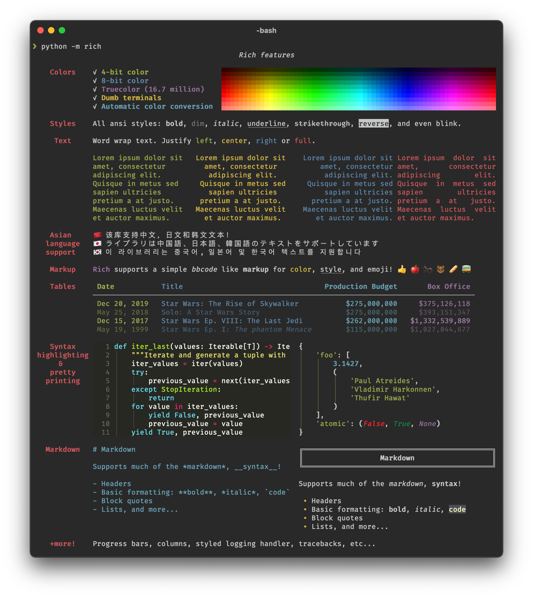

Monkeypatching Rich for Beautiful Terminals in Pyscript
intro.py
print("[bold]This text[/bold] is being [b]formatted[/b] by the [link https://github.com/Textualize/rich]Rich Console Formatting Library[/]")
print("and output with [yellow1 on grey15]<PyScript>[/]. There's a [b link ../../project/richdemo]whole page of examples :link:[/]")
print("The REPL below is automatically formatted with RICH;")
print("Press [italic]shift+enter[/] or click :play_button: to execute the REPL:")TL;DR: How to Use Rich in PyScript
To use Rich for the output of all your PyScript tags, add the following to a new PyScript take at the top of the page's body:
_richsetup.py
from typing import Iterable
from sys import stdout, modules
from contextlib import contextmanager
from rich import get_console
from rich.console import _is_jupyter
from rich.segment import Segment
import rich.jupyter
from pyodide import JsException
from js import console
# Per pyodide docs, determine if we're running inside pyodide at Runtime
def is_pyodide() -> bool:
return "pyodide" in modules
# Patch jupyter detection of the global _console object to detect pyodide
c = get_console()
c.is_jupyter = is_pyodide #monkeypatch jupyter detection @propety
# patch function so if user creates any additional Consoles they behave correctly
# While the global _console us
_is_jupyter = is_pyodide
# Jupyter display method renders html and writes to stdout
def display_pyscript(segments: Iterable[Segment], text: str) -> None:
"""Allow output of raw HTML within pyscript/pyodide"""
html = rich.jupyter._render_segments(segments)
stdout.write(html)
#patch jupyter display method to write processed HTML to stdout
rich.jupyter.display = display_pyscript
print = get_console().print
# PyScripts OutputCTXManager is used for stdout but does not implement
# full fill interface; this prevents a warning each time console tries
# to print
stdout.flush = lambda: None
##---- Redefine Pyscript.write()---
class output_buffer():
""" A (inefficient) buffer to capture stdout to a string """
def __init__(self):
self._internal_buffer = ''
def write(self, value: any):
if len(self._internal_buffer):
self.internal_buffer += '<br>'
self._internal_buffer += value
def read(self):
return self._internal_buffer
def flush(self):
pass
@contextmanager
def stdout_to_buffer(el:Element, append: bool) -> None:
""" A context manager to manage an output_buffer, writes to an Element on closure"""
global stdout #Usually Pyscript OutputCTXManager at this pont
_old_stdout = stdout
stdout = output_buffer()
try:
yield
finally:
el._write(stdout.read(), append)
stdout = _old_stdout
Element._write = Element.write
#Allow Element.write() to take an object from rich
def newWrite(self, value, append: bool =False) -> None:
""" A Monkeypatched version of Pyscript's Element.write(), auto-transforming Rich objects and rendering standard objects. """
if isinstance(value, (str, Exception, JsException)):
self._write(value, append)
else:
with stdout_to_buffer(self, append):
get_console().print(value)
Element.write = newWriteScroll to see complete code
Live updates work a little differently in PyScript than they do in the terminal - see the Live Updates section for details.
This code was written (and is running on this page on) PyScript Version 2022.06.1. Since there's an overhaul of how PyScript renders coming very soon, check the documentation for updates.
Background
Though PyScript is still in its infancy, the possibilities unlocked by running Python in a browser are already blossoming. As such, I'm seeing more and more users on the official forums, the unofficial Discord, and the Github Issue Tracker interested in working with their favorite libraries to the web. Let's look at the process of taking a package that runs but doesn't run well, and see how we can use patch it after import to bring it to life using Pyscript.
Lots of packages work fine right out of the box - anything written in Pure Python stands a good chance of at least running. But just because it runs, doesn't mean it'll look good or behave the way we expect objects to on a webpage. Interactive packages, like matplotlib or terminal-based packages like tqdm or colorama, may not be immediately interactable in the browser, because they've implemented their own methods for interpretting input/output that the browser doesn't play nicely with. Just because the PyScript/Pyodide interpretter doesn't crash doesn't mean you can get useful info in and out of an existing module.
One such library is Rich: "a Python library for rich text and beautiful formatting in the terminal" by Will McGugan. It allows for tasteful pretty-printing of most Python objects, syntax highlighting, color and layout control and more, all written in Pure Python. See the sample image to the side or the linked homepage for bountiful exmaples.
Of course, Rich is intended to run in the terminal. Since the display functionality in a web browser differs significantly from a terminal environment, there's no reason to expect it will work out of the box in PyScript. But since it exists as a pure Python wheel and is importable by Pyodide, I wanted to see what it would take to get it working.
What follows is the result of a few hours of bashing things together. It's not meant to be production ready (thought it could turn into a module if there's interest). Rather, it's meant to demonstrate a patching strategy for modules that already integrate with web-Python environments like Jupyter and iPython.
If you want to skip the dev log, you can skip to the code that runs to patch Rich on this page or the gallery of Rich-in-PyScript samples below.

The demo image from the Rich GitHub page shows off its many features
The Groundwork
The strategy we'll employ to get Rich working is called "Monkeypatching." From the Zope Wiki:
A MonkeyPatch is a piece of Python code which extends or modifies other code at runtime (typically at startup)...The motivation for monkeypatching is typically that the developer needs to modify or extend behavior of a third-party product ... and does not wish to maintain a private copy of the source code.
So, we'll be loading/importing Rich as-is, modifying some of the attributes/methods/behaviors of its classes and functions and leaving others along. This will let us preserve the most of Rich's functionality untouched, while tweaking it just enough to work inside PyScript.
Almost all of the heavy lifting in terms of the formatting is handled by the fact Rich already supports Jupyter Notebooks, so there's already translation in place to translate Rich's internal formatting syntax to HTML. All we have to do is:
- Import rich (which means it'll need to be present in our
<py-env> - Hook into or replace the code that detects that we're running in a Notebook to instead tell that we're running inside Pyodide.
- Take the output that would be fed to the notebook and feed it to
stdout, where PyScript's context managers will get it to the right place - Overwrite the built-in
print()function to point to rich's print function, to get nicely formatted printing - Point PyScript's
Element.write()method at a new method that hooks into Rich's __rich_console__ and__rich__formatting methods.
The Steps
Making Rich Think We're in a Jupyter Notebook
Since we're intending to run this in a browser anyway, we could just set console.is_jupyter = True to force Rich to render HTML. But we'll be slightly nicer and redirect that property to a new function is_pyodide. This just looks to see if 'pyodide' is in our available modules, as suggested by the pyodide FAQ. This means that whenever our code is running in Pyodide, the Rich library will render as if it's going to be output to a Jupyter notebook.
# Per pyodide docs, determine if we're running inside pyodide at Runtime
def is_pyodide() -> bool:
return "pyodide" in modules
# Patch jupyter detection of the global _console object to detect pyodide
c = get_console()
c.is_jupyter = is_pyodide #monkeypatch jupyter detection @propety
# patch function so if user creates any additional Consoles they behave correctly
# While the global _console us
_is_jupyter = is_pyodideReplacing Rich's Display Function with our Own
Similarly, we'll point rich.jupyter.display at a new function we'll write that gets the output that the Jupyter notebook would have received and send it to stdout. And, as noted above, we'll redirect the usual print function to the rich print function, to get nicely formatted outputs whenever we use the standard print() syntax.
# Jupyter display method renders html and writes to stdout
def display_pyscript(segments: Iterable[Segment], text: str) -> None:
"""Allow output of raw HTML within pyscript/pyodide"""
html = rich.jupyter._render_segments(segments)
stdout.write(html)
#patch jupyter display method to write processed HTML to stdout
rich.jupyter.display = display_pyscript
print = get_console().printFixing Element.write()
Finally, we need to match some adjustments to PyScript's Element.write() function, which is a utility method that allows PyScript users to send output to a specific DOM element directly. Since this bypasses the usual writing to stdout (and directly modifies the innerHTML attribute of the DOM element), we need to do a little legwork to get the formatting to work.
In a nutshell, we'll solve this issue in 3 steps:
- When the user's code calls to
Element.write(), if the object written is a plainstr,Exception, orJsException, we'll pass it though toElement.write()unchanged. This preserves some of the functionality around how PyScript currrently does error handling and presentation. - Otherwise, we'll use a context manager to temporarily redirect
stdoutto a buffer, feed the object torich.console.print(), and capture that output in the buffer. - When the context manager closes, it writes its contents to the appropriate element using the original
Element.write()functionality.
I've implemented a rudementary File-like object called output_buffer that simply saves anything written to it as a concatenated string. If this isn't the first thing in the buffer, we insert a <br> tag to make it start on a new line. This is admittedly a hack, but it largely gives the right appearance.
# PyScripts OutputCTXManager is used for stdout but does not implement
# full fill interface; this prevents a warning each time console tries
# to print
stdout.flush = lambda: None
##---- Redefine Pyscript.write()---
class output_buffer():
""" A (inefficient) buffer to capture stdout to a string """
def __init__(self):
self._internal_buffer = ''
def write(self, value: any):
if len(self._internal_buffer):
self.internal_buffer += '<br>'
self._internal_buffer += value
def read(self):
return self._internal_buffer
def flush(self):
pass
@contextmanager
def stdout_to_buffer(el:Element, append: bool) -> None:
""" A context manager to manage an output_buffer, writes to an Element on closure"""
global stdout #Usually Pyscript OutputCTXManager at this pont
_old_stdout = stdout
stdout = output_buffer()
try:
yield
finally:
el._write(stdout.read(), append)
stdout = _old_stdout
Element._write = Element.write
#Allow Element.write() to take an object from rich
def newWrite(self, value, append: bool =False) -> None:
""" A Monkeypatched version of Pyscript's Element.write(), auto-transforming Rich objects and rendering standard objects. """
if isinstance(value, (str, Exception, JsException)):
self._write(value, append)
else:
with stdout_to_buffer(self, append):
get_console().print(value)
Element.write = newWriteScroll to see complete code
What About ...
Those who are familiar with the various ways Rich already provides to capture its own output, as well as exporting it as HTML, may have some reasonable questions here. It's surely possible I've missed something in Rich's expansive API, but I didn't find a solution that did everything I want without implementing my own context manager. That said, it does feel like there shuold be a simpler way...
- I wanted to make the default console returned by
get_console()have the desired behavior, as well as any consoles the user created in the future. Hence the reason for overriding the _is_jupyter method instead of just making the default consoleforce_jupyter=True - Using
Console.capture()captures the entire contents of the console, from which it can be exported (or saved as a file) to HTML, but there isn't a direct way to save just the user-input-turned-into-HTML as far as I know. - Because Rich's jupyter.display() method tries specifically to write to an iPython display, I needed to override this method to render the objects to HTML and just write those to std.
With all these pieces put together, now most writes to stdout should be formatted using Rich's format rules.
Live Updates
While there are lots of things that make running Python inside a browser window different from running in a terminal/desktop environment, one of the most striking is that we only have one event loop and we can't block it. Ever. Even a simple time.sleep(1) irrevocably blocks the JavaScript event loop.
This is where asyncio comes to the rescue. The Pyodide runtime has a custom event loop ("Webloop") that hooks to the asyncio webloop, allowing nonblock asynchronous operations. For example, we can use asyncio.sleep() instead of time.sleep(), asynccontextmanagers instead of context managers, and so on.
Hooking this deep into Rich's functionality requires some significant rewriting of the Live class, as well as an additional helper class that constantly refreshes the live display by adding new callouts to the event loop every quarter second. The full results are below.
If you want to use the Live update element in your PyScript page, you'll want to:
- Add the following code to a PyScript tag near the top of your page.
- Use the included
Liveclass instead of importing fromRich.live. It has the same interface as Rich.live, though not all features are implemented yet. - Avoid using any blocking io calls, instead substituting with their async versions. For an example of how to use the new Live class in the same way Rich does (i.e. as a context manager), see the live examples on the Rich Demo page.
_livepatch.py
import asyncio
from rich import get_console
from rich.console import Console, RenderableType, ConsoleRenderable
from typing import Type, Optional, Callable, IO, List
from types import TracebackType
from rich.live_render import VerticalOverflowMethod
class PyscriptRefresher():
def __init__(
self,
renderable: RenderableType,
element: 'Element',
live: 'Live',
refresh_per_second: float = 4,
) -> None:
self._renderable = renderable
self.live = live
self.element = element
self.refresh_per_second = refresh_per_second
self.done = False
self._refresh_task = None
async def update_live(self) -> None:
console.log("Starting update live function")
while True:
console.log(f"About to write {self._renderable}")
self.element.write(self._renderable)
await asyncio.sleep(1/self.refresh_per_second)
def run(self) -> bool:
"""Starts the refresh coroutine if it is not already running
Returns:
True if the coroutine was successfully created and started
False if the coroutine was already running, or not successfully created
"""
if self._refresh_task is not None:
return False
loop = pyscript.loop
console.log("About to start running refresh task")
self._refresh_task = loop.create_task(self.update_live())
#loop.run_until_complete(self._refresh_task)
def stop(self) -> None:
"""Stops the refresh coroutine if it is running"""
if self._refresh_task is not None:
self._refresh_task.cancel()
self._refresh_task = None
class Live():
"""Renders an auto-updating live display of any given renderable.
Mirrors the API of rich.live.LIVE
Args:
renderable (RenderableType, optional): The renderable to live display. Defaults to displaying nothing.
console (Console, optional): Optional Console instance. Default will an internal Console instance writing to stdout. >>> NOT IMPLEMENTED
auto_refresh (bool, optional): Enable auto refresh. If disabled, you will need to call `refresh()` or `update()` with refresh flag. Defaults to True >>> NOT IMPLEMENTED
refresh_per_second (float, optional): Number of times per second to refresh the live display. Defaults to 4. >>> NOT IMPLEMENTED
transient (bool, optional): Clear the renderable on exit (has no effect when screen=True). Defaults to False. >>> NOT IMPLEMENTED
redirect_stdout (bool, optional): Enable redirection of stdout, so ``print`` may be used. Defaults to True. >>> NOT IMPLEMENTED
redirect_stderr (bool, optional): Enable redirection of stderr. Defaults to True. >>> NOT IMPLEMENTED
vertical_overflow (VerticalOverflowMethod, optional): How to handle renderable when it is too tall for the console. Defaults to "ellipsis". >>> NOT IMPLEMENTED
get_renderable (Callable[[], RenderableType], optional): Optional callable to get renderable. Defaults to None. >>> NOT IMPLEMENTED
element_id (str): The id of a DOM element (often a div) that the live element will be written to
The screen parameters of rich.live.Live is not used
"""
def __init__(
self,
renderable: Optional[RenderableType] = None,
element_id: str = '',
*,
rich_console: Optional[Console] = None,
#screen: bool attribute not used
auto_refresh: bool = True,
refresh_per_second: float = 4,
transient: bool = False,
redirect_stdout: bool = True,
redirect_stderr: bool = True,
vertical_overflow: VerticalOverflowMethod = "ellipsis",
get_renderable: Optional[Callable[[], RenderableType]] = None,
**kwargs
) -> None:
assert refresh_per_second > 0, "refresh_per_second must be > 0"
self._renderable = renderable
self.console = rich_console if rich_console is not None else get_console()
#self._screen = screen
self._alt_screen = False
self._redirect_stdout = redirect_stdout
self._redirect_stderr = redirect_stderr
self._restore_stdout: Optional[IO[str]] = None
self._restore_stderr: Optional[IO[str]] = None
#self._lock = RLock()
self.auto_refresh = auto_refresh
self.transient = transient
self.vertical_overflow = vertical_overflow
self._get_renderable = get_renderable
assert element_id != ''
self.element = Element(element_id)
self.refresh_per_second = refresh_per_second
self._refresh_thread = PyscriptRefresher(renderable = self._renderable, element = self.element, live=self, refresh_per_second = self.refresh_per_second)
@property
def is_started(self) -> bool:
"""Check if live display has been started."""
return self._refresh_thread._refresh_task is not None
def get_renderable(self) -> RenderableType:
renderable = (
self._get_renderable()
if self._get_renderable is not None
else self._renderable
)
return renderable or ""
def start(self, refresh: bool = False) -> None:
"""Start live rendering display.
Args:
refresh (bool, optional): Also refresh. Defaults to False.
"""
if refresh: self.element.write(self._renderable)
self._refresh_thread.run()
def stop(self) -> None:
"""Stop live rendering display."""
self._refresh_thread.stop()
def __enter__(self) -> 'Live':
self.start(refresh=self._renderable is not None)
return self
def __exit__(
self,
exc_type: Optional[Type[BaseException]],
exc_val: Optional[BaseException],
exc_tb: Optional[TracebackType],
) -> None:
self.stop()
def renderable(self):
return self._renderable
def update(self, renderable: RenderableType, *, refresh: bool = False) -> None:
"""Update the renderable that is being displayed
Args:
renderable (RenderableType): New renderable to use.
refresh (bool, optional): Refresh the display. Defaults to False.
"""
pass #Not implemented
def refresh(self) -> None:
"""Update the display of the Live Render."""
pass #not implemented
def process_renderables(
self, renderables: List[ConsoleRenderable]
) -> List[ConsoleRenderable]:
pass #not implemented
Scroll to see complete code
Live Table Demo
livetable.py
import asyncio
from collections import deque
from random import random, choice, randint
from rich.table import Table
from rich.emoji import Emoji
from datetime import datetime
from faker import Faker
#from livepatch import Live
fake = Faker()
while (True):
table = Table(width = 80)
table.add_column("Time", width=5)
table.add_column("Source", width=15)
table.add_column("Destination", width=15)
max_rows = randint(6,10)
num_rows = 0
while num_rows <= max_rows:
with Live(table, "live-table-output"):
await asyncio.sleep(.3 + random() * .6)
num_rows += 1
time = datetime.now().strftime('%S.%f')
time = time[:min(len(time), 5)]
source, dest = fake.ipv4(), fake.ipv4()
#data added here is automatically visible in the Table
table.add_row(time, source, dest) Scroll to see complete code
What Works and What Doesn't
See the demo page for working examples.
Out of the box, this allows for formatting of most static Rich objects: Text, Lists and Dicts, JSON objets, etc. The various formatting objects that rely on them - Panels, Columns, Layouts etc - also work.
Some specific formatting tags are broken - though personally, I"m not too sad that <blink> doesn't work.
Emoji are also (somewhat) broken, though that's mostly through me running out of time to look at their implementation in depth. A brief glance at the Emoji.py source makes it look like perhaps what I'm doing for output is clobbering the unicode characters that should be output as Emoji? Or perhaps how they're being rendered - the TL;DR example at the top of the page shows (for me) a successful "hand-pointing-down" but a non-colored "play button".
Things that Don't Work
Some Text Formatting Options
richnonformatted.py
print("[blink]Blinking Text[/blink]")Emoji's (Ish)
richemoji.py
print(":red_heart-emoji:")
print(":red_heart-text:")